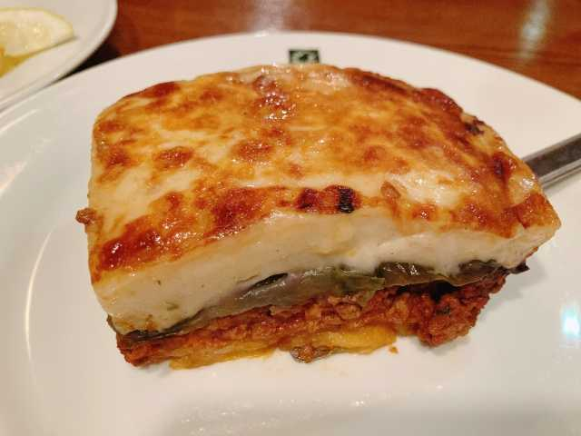
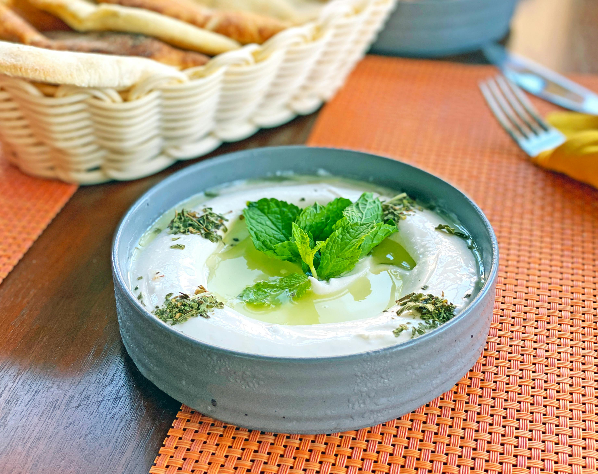

ムサカは、ひき肉、ナス、ベシャメルソースを層にしてオーブンで焼き上げた、ギリシャの代表的な家庭料理です。
ナスと肉の旨味が濃厚なソースと絡み合い、食べ応えのある一品となっています。ギリシャ以外にも、バルカン半島や中東諸国でそれぞれの特徴を持つムサカが存在します。

ザジキは、ギリシャ料理の代表的なディップソースで、水切りヨーグルトにきゅうり、にんにく、オリーブオイル、ディルなどのハーブを加えて作られます。
さっぱりとした爽やかな味わいが特徴で、肉料理や野菜のディップ、パンに添えるなど様々な用途で親しまれています。特に暑い季節には食欲増進効果も期待できます。